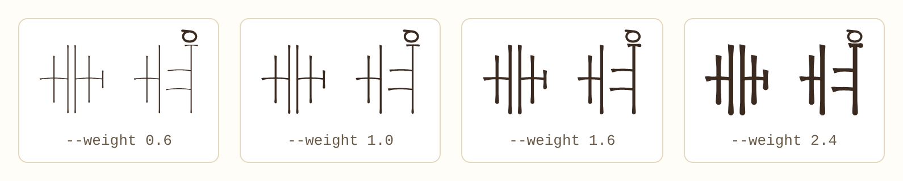
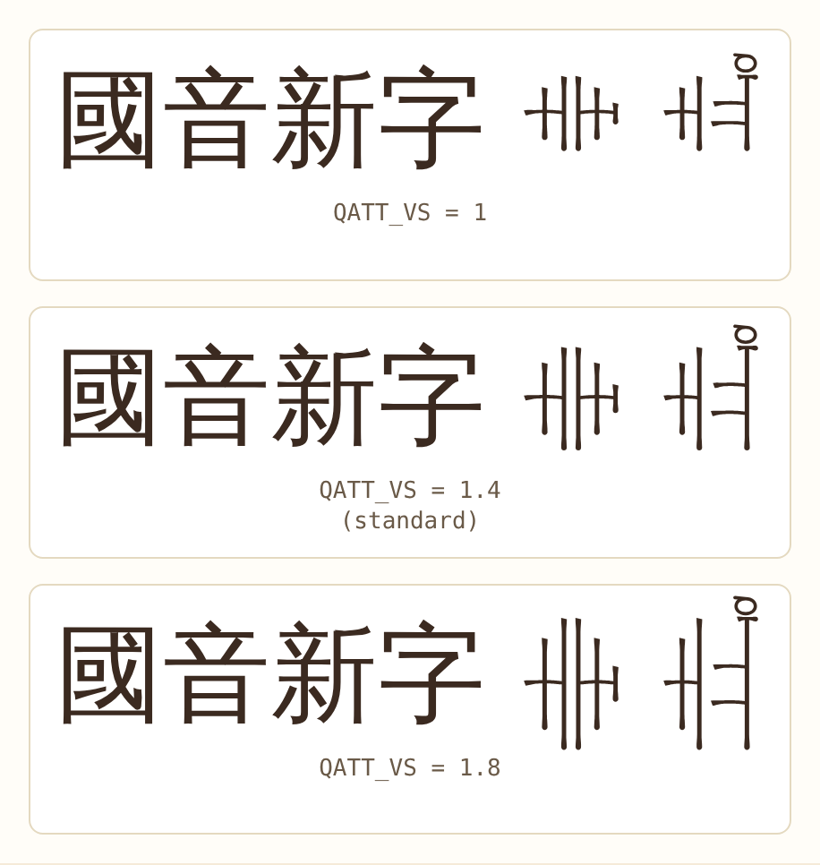
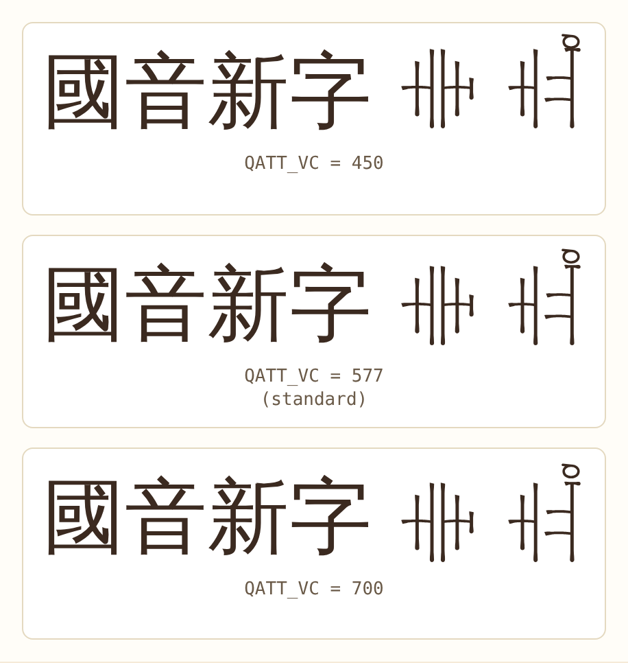
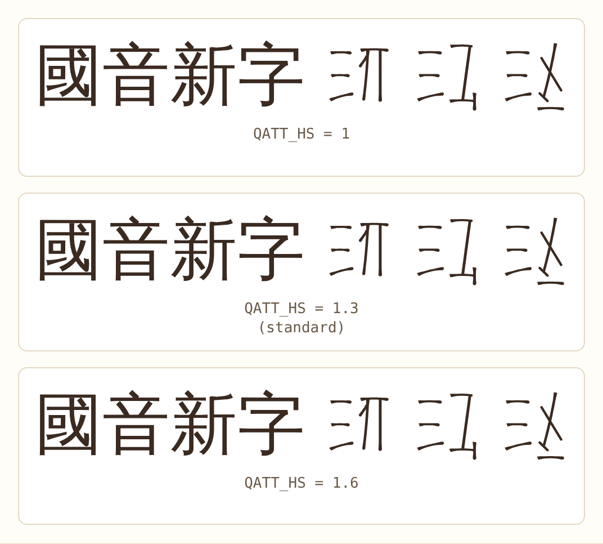
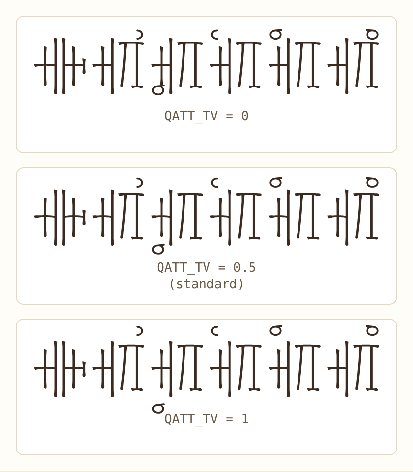
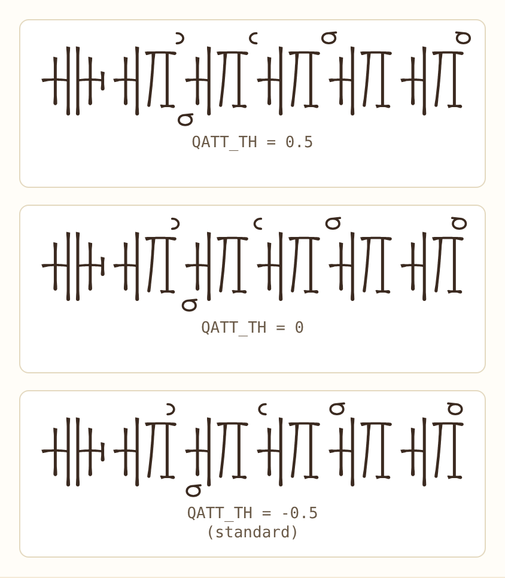
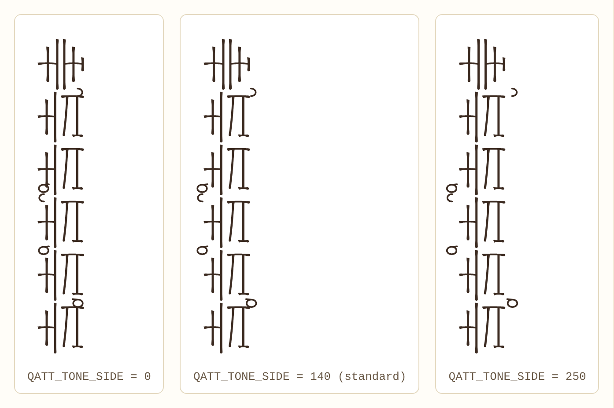
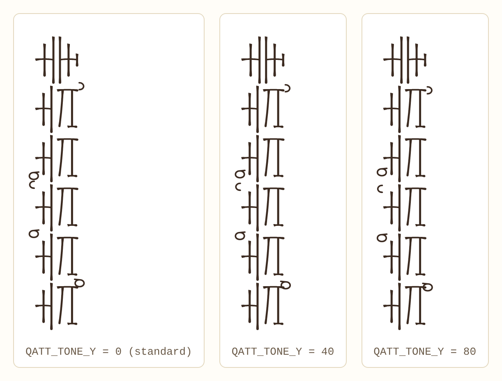

Admin / Fonts
How the QATT fonts are built
The fonts are not drawn by hand letter by letter. A script builds them from stroke data, so a change of one number (the height of the letters, the place of the tones) can be applied to all 14 fonts at once. This page explains the steps and what the numbers do.
The process in short
- Stroke dataThe shapes of the symbols are kept as lines, not as finished outlines:
fonts/glyphs.json(the 164 characters as drawn byqatt.js),fonts/kage.json(the shapes of the Glyph editor, used by Serif, Gothic, Pen and Khai) andfonts/brush.json(the brush model of the Brush editor). You change them in the editors of this admin area. - Outlines:
build_font.pyTurns the lines into letters: gives them a stroke width, stretches them to the size of a Chinese character, puts them in their cell and adds the rules that join onset, rhyme and tone into one syllable. - Vertical text:
font_vertical.pyAdds a second set of positions for vertical writing, so that a syllable is one square in a column and the tones stand at the side. - Name and numbers:
font_names.pyWrites copyright, licence and the numbers used for the build into the font (see "Read the numbers out of a font"). - All fonts:
build_all.pyDoes steps 2 to 4 for every font in one go and writes.ttfand.woff2intofonts/. Both files are kept in the repository, so a font only has to be built again when the data or the design changes.
A font that is built must also be listed in js/fonts.js (that is where the menus of the editors get their fonts), and the other way round.
Build the fonts
Once, to set up (Python 3):
python3 -m venv .venv && . .venv/bin/activate
pip install -r tools/requirements.txtThen, in the root of the repository:
python3 tools/build_all.py # all fonts, about a minute
python3 tools/build_all.py pen khai # only fonts whose name contains one of the words
python3 tools/build_all.py --out /tmp/new # into another folder, to compare before you replace anythingTo try a number, put it in front of the command. This builds the Pen fonts with taller letters and leaves everything else as it is:
QATT_VS=1.5 python3 tools/build_all.py --out /tmp/test pen--out) and look at the result with the code table (pick the font there) before you copy it into fonts/.The fonts
| Font | What it is |
|---|---|
| Serif | Song style, thin horizontals and thick verticals (from the Glyph editor) |
| Gothic, Gothic wide | Even strokes without serifs. The wide one gives a joined pair 1.25 cells instead of 1 |
| Pen (4 weights) | Round strokes like a pen: extra light, light, regular, medium |
| Pen cut (4 weights) | The same with flat, slanted stroke ends |
| Khai | Regular script style (draft) |
| Brush | Strokes with the brush model of the Brush editor |
| Prototype light | The first font, straight from the lines of qatt.js |
The numbers
Sizes are in font units: the letter square (the "em") is 1000 units high and wide. A letter should be about as big as a Chinese character, so that QATT and Han text look right next to each other.
Per font (written after the file name in build_all.py)
| Option | What it does |
|---|---|
--kage file | Use the shapes of the Glyph editor. The style is Serif unless one of the next three is given |
--pen, --gothic, --kaiti | Pen, Gothic or Khai style |
--cut | Flat, slanted stroke ends (with --pen) |
--weight F | How thick the strokes are. For Pen: 0.6 extra light, 1.0 light, 1.6 regular, 2.4 medium (Khai 2.0) |
--label Name | Adds a word to the font name, e.g. "Light" |
--wide | Joined pairs 1.25 cells wide, so their halves are squeezed less |
--light | Thin strokes (Prototype only) |
--vertical | Adds the vertical positions (build_all.py always sets it) |

--weight: the same Pen font with four stroke thicknesses (extra light, light, regular, medium). These four are built with build_all.py as separate fonts.Size and shape (all fonts, set in front of the command)
| Number | Standard | What it does |
|---|---|---|
QATT_VS | 1.4 | How much the letters are stretched in height. The raw letters fill only about two thirds of the square; a Chinese character fills it. 1 means no stretching |
QATT_VC | 577 | The height the stretching grows from: what lies above it moves up, what lies below it moves down. Decides where the letters sit on the line |
QATT_HS | 1.3 | How much a single letter (not a joined pair) is stretched in width, to be as wide as a Chinese character |
QATT_PM | 60 (wide font: 100) | Space between a joined pair and the edge of its cell. Smaller number, wider pair |
QATT_PW | 1.36 (Brush, Prototype) | Width of a joined pair in the fonts that are not made from the Glyph editor |
QATT_SY | 10 | Size of the drawing in the square: 10 means the 100 x 100 drawing fills the 1000 units exactly. Changes the size of everything |
QATT_SXF | 1.0 | Width in relation to height (1 is square). Changes the width of everything |

QATT_VS: with 1 the letters are small next to the Chinese characters; with 1.4 they are as high; with 1.8 they are too high (the tone marks too).
QATT_VC: moves where the letters sit on the line. With 450 they sit higher, with 700 lower. The change is small, a few units of height.
QATT_HS: the width of a single letter. With 1 it is narrow, with 1.3 about as wide as a Chinese character, with 1.6 too wide.Tones in horizontal text
The tone marks hang over and under the syllable. When the letters are stretched, the tones should not stay behind, so they follow the stretching by a share:
| Number | Standard | What it does |
|---|---|---|
QATT_TV | 0.5 | How much of the vertical stretching the tones follow. 0: they stay where they are; 1: they move as far as the letters; 0.5: half way. The upper ones go up, the lower ones down |
QATT_TH | -0.5 | The same sideways. A negative number moves the tones in towards the middle of their cell, a positive one out |

QATT_TV: with 0 the tones stay close to the letters, with 1 they move away from them as far as the letters grew. Look at the lower tone in the third syllable and the upper ones.
QATT_TH: with 0.5 the tones move out of their cell, with -0.5 they sit nearer to the middle of it.Tones in vertical text
In a column the cell above and below is the next syllable, so tones that hang over and under the cell would lie on the neighbours. In vertical text they therefore move into the height of their cell and out to the side:
| Number | Standard | What it does |
|---|---|---|
QATT_TONE_SIDE | 140 | How far a tone moves to the left or right, away from the middle of the column. Bigger number: the tone is further from the letters (and nearer to the next column) |
QATT_TONE_Y | 0 | How far a tone stays inside the top or bottom edge of its cell. 0: it touches the edge; bigger: further in, towards the letters |

QATT_TONE_SIDE in vertical text: with 0 the tones lie on the letters, with 140 they sit at the edge of the letters, with 250 they hang out into the space between the columns.
QATT_TONE_Y in vertical text: with 0 the tones touch the top or bottom edge of their cell, with 80 they have moved towards the middle of the syllable.A font can have its own values, and every tone too: fonts/tone-offsets.json, set in Tone offsets; the environment variables count for a font without them. These two only change vertical text. They can also be applied to fonts that are already built, without building them again: QATT_TONE_SIDE=100 python3 tools/font_vertical.py fonts/qatt-*.ttf (it changes the .ttf files and writes the .woff2 again; running it twice does no harm).
Fine tuning in the code
A few more constants are at the top of build_font.py and have no environment variable: the stroke widths (STROKE and its relatives), the share of the upper letter in a stack (STACK_UP), the gap between the two halves of a pair (PAIR_G) and how far a tone must stay inside its cell (TONE_MARGIN). Change them in the file and build again.
The pictures on this page are made with node tools/build_images.js: it builds QATT Pen again with one number changed, sets the same text in each and takes the pictures into admin/font/build/. To change a picture, edit its entry in the list at the top of the script.
Read the numbers out of a font
Every font built with build_font.py carries the numbers it was built with, in the description of the font (name ID 10), together with the date and the commit of the tools. With them a font can be built again exactly:
python3 -c "from fontTools.ttLib import TTFont; print(TTFont('fonts/qatt-pen.ttf')['name'].getDebugName(10))"It prints something like Built 2026-10-17 with tools/build_font.py … commit 4b054e7: style pen, weight 1.6, … VS 1.4, VC 577.0, HS 1.3, … TV 0.5, TH -0.5, … TONE_SIDE 140, TONE_Y 0. A +changes after the commit means the tools had changes that were not committed yet. Fonts built before the tones in vertical text were added do not list TONE_SIDE and TONE_Y; they were built with the standard values.
What the font does with the characters
Onset, rhyme and tone are separate characters that the font puts together (OpenType rule ccmp):
- Onset,
U+F009A(joiner), rhyme: one cell. The onset goes in the left half, the rhyme in the right half; the joiner takes no space. - Letter,
U+F009B(combiner), letter: the first goes into the lower 55 %, the second into the upper 45 % of the cell. - A tone after any character becomes a small form without width that lies over the cell before it.
The code points are U+F0000 plus the number in the Unicode proposal (unicode.html). The complete description of the tools, with all commands, is tools/README.md in the repository.